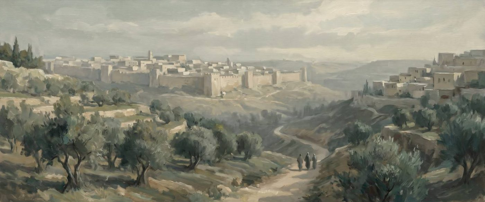
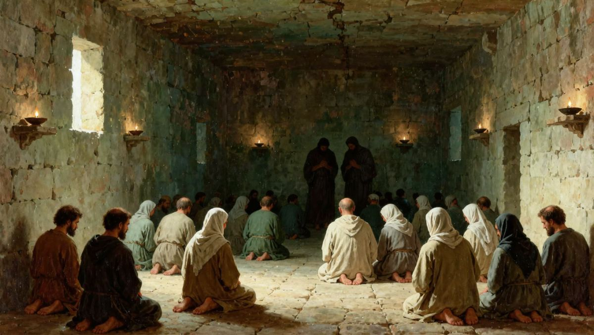

제비는 어떻게 뽑았을까
가룟 유다의 빈 곳을 채우려고 제자들은 기도한 뒤 제비를 뽑았어요. 성경에는 제비 뽑는 이야기가 여러 번 나와요. 구약의 제비와 신약의 제비는 무엇이 다를까요? 그리고 그때 사람들은 제비를 실제로 어떻게 뽑았을까요?
한눈에 보기
사도행전 1장에서는 무슨 일이 있었나요?
제비는 맨 마지막 한 단계였어요. 그 앞에 기준과 추천과 기도가 있었어요.
예수님이 하늘로 올라가신 뒤 제자들과 여자들, 예수님의 형제들까지 백이십 명쯤이 예루살렘에 모여 있었어요. 베드로가 일어나 유다가 버린 직무를 다른 사람이 맡아야 한다고 말해요. 근거는 시편 두 구절이었어요(1:20). 기준도 정했어요. 요한의 세례 때부터 예수님이 올라가실 때까지 늘 함께 다니며 부활을 본 사람이어야 했어요(1:21–22).
그 기준에 맞는 사람으로 두 명이 세워졌어요. 바사바라고도 하고 유스도라는 별명이 있는 요셉, 그리고 맛디아예요(1:23). 그다음에 기도가 이어졌어요.
그들이 기도하여 이르되 뭇 사람의 마음을 아시는 주여 이 두 사람 중에 누가 주님께 택하신 바 되어
사도행전 1:24 · 개역개정
“택하신”으로 옮긴 헬라어 엑셀렉소(ἐξελέξω)는 지나간 일을 가리키는 부정과거 형태예요. 그래서 앞으로 고를 사람을 정해 달라는 기도라기보다, 주님이 이미 고르신 사람을 드러내 달라는 기도로 읽혀요. 이 기도 뒤에 제비를 뽑았어요.

제비 뽑아 맛디아를 얻으니 그가 열한 사도의 수에 들어가니라
사도행전 1:26 · 개역개정
개역개정은 한 동작으로 줄였지만 헬라어는 두 동작이에요. “그들을 위해 제비를 주었다”, 그리고 “제비가 맛디아 위에 떨어졌다.” 누가 제비를 다루었는지는 적혀 있지 않아요. “그들이”라는 3인칭 복수뿐이에요. 방법을 짐작할 만한 말도 “떨어졌다(ἔπεσεν)” 하나뿐이에요. 이 말은 투표가 아니라 제비였다는 것을 알려 줄 뿐, 던졌는지 꺼냈는지는 가르지 못해요.
누가는 이 장면에 말놀이도 하나 넣었어요. 17절에서 유다는 이 직무의 “몫(κλῆρος)”을 받았던 사람이에요. 26절에서는 같은 낱말 클레로스가 “제비”가 되어 맛디아 위에 떨어져요. 사도의 직무가 하나님이 나눠 주시는 몫으로 그려진 거예요. 개역개정은 17절을 “직무의 한 부분을 맡았던”으로 옮겨서 이 연결이 우리말에서는 보이지 않아요.
구약에서 제비는 무엇에 쓰였나요?
무엇보다 나누는 데 썼어요. 숨은 것을 캐는 데 “제비”라는 낱말을 쓴 다섯 번은 모두 이방인의 일이에요.
히브리어 제비(גּוֹרָל, 고랄)는 구약에 일흔일곱 번 나와요. 그 가운데 쉰두 번이 땅과 성읍을 지파에 나누거나 성전 직무를 가문에 맡기는 대목이에요. 여호수아 한 권에만 스물여섯 번 나오고, 거의 다 땅 분배 장면이에요.
| 쓰임 | 횟수 | 대표 구절 |
|---|---|---|
| 땅·성읍 나누기 | 41 | 민수기 26:55–56 · 여호수아 14–21장 · 미가 2:5 |
| 성전 직무·거주·나무 헌물 맡기기 | 11 | 역대상 24–26장 · 느헤미야 10:34, 11:1 |
| 비유 — 몫과 운명 | 7 | 시편 16:5 · 예레미야 13:25 · 다니엘 12:13 |
| 속죄일 두 염소 | 5 | 레위기 16:8–10 |
| 포로·전리품 나누기 | 5 | 시편 22:18 · 요엘 3:3 · 오바댜 1:11 · 나훔 3:10 |
| 책임 있는 사람 찾기 | 3 | 요나 1:7 (이방 선원들) |
| 이방의 점 — 부르 | 2 | 에스더 3:7, 9:24 (하만) |
| 지혜 격언 | 2 | 잠언 16:33, 18:18 |
| 군사 행동 순서 | 1 | 사사기 20:9 |
잠언에는 제비를 두고 한 말이 두 구절 있어요. 한 구절은 결정이 하나님께 있다고 하고, 다른 구절은 제비가 다툼을 끝낸다고 해요.
제비는 사람이 뽑으나 모든 일을 작정하기는 여호와께 있느니라
잠언 16:33 · 개역개정
제비 뽑는 것은 다툼을 그치게 하여 강한 자 사이에 해결하게 하느니라
잠언 18:18 · 개역개정
이 표에는 빠진 장면이 셋 있어요. 여리고에서 죄지은 아간을 찾을 때(여호수아 7장), 사울을 왕으로 뽑을 때(사무엘상 10장), 금식 맹세를 어긴 사람을 찾을 때(사무엘상 14장)예요. 아간과 사울 때는 지파에서 가족으로, 가족에서 한 사람으로 좁혀 가요. 요나단 때는 사울 쪽인지 백성 쪽인지 먼저 가르고, 다시 사울과 요나단 사이를 갈라요. 세 장면 모두 본문은 “제비”라는 낱말 대신 “뽑혔다(לכד)”라는 동사를 써요. 1세기 역사가 요세푸스는 아간 장면을 “지파마다 제비를 뽑았다”고 풀어 썼어요(『유대 고대사』 5.1.14).
구약은 뽑는 방법을 알려 주나요?
알려 주지 않아요. 남은 단서는 제비와 함께 쓰인 동사들이에요.
구약은 제비가 돌이었는지 나무였는지 한 번도 말하지 않아요. 무엇에 담았는지도 잠언 16:33의 “품” 말고는 나오지 않아요. 그래도 동사를 모아 보면 두 가지 그림이 떠올라요. 던져서 떨어뜨리는 그림, 그리고 그릇이나 옷 품에서 꺼내는 그림이에요. 다만 이 동사들은 “몫이 돌아가다”쯤의 굳어진 표현으로도 쓰여서, 실제 동작을 확정해 주지는 못해요.
| 동사 | 뜻 | 횟수 | 떠오르는 동작 |
|---|---|---|---|
| הִפִּיל 히필 | 떨어뜨리다 | 13 | 던져 떨어뜨림 (역대상 24–26장, 요나 1:7 등). 칼형 “떨어지다” 3회(역대상 26:14, 요나 1:7, 에스겔 24:6)는 따로 셈 |
| יָצָא 야차 | 나오다 | 11 | 그릇·품에서 나옴 (여호수아 19장, 역대상 24:7 등) |
| עָלָה 알라 | 올라오다 | 4 | 꺼내 올림 (레위기 16:9–10 등) |
| 던지다 계열 셋 | 던지다 | 7 | 던짐 (여호수아 18:6·8·10, 요엘 3:3 등) |
| הוּטַל 후탈 | 던져 넣어지다 | 1 | 옷 품에 던져 넣음 (잠언 16:33) |
잠언 16:33의 “품(חֵיק, 헤크)”은 옷 앞섶의 주머니처럼 접힌 부분이에요. 거기에 제비를 넣고 흔들어 꺼냈다고 읽으면 자연스럽지만, 본문은 동작을 더 자세히 그리지 않아요. 레위기 16:8은 두 염소에게 한 제비는 여호와를, 한 제비는 아사셀을 위해 쓰라고 해요. 두 제비가 서로 구별되었다는 것까지는 알 수 있어요. 그 위에 글자를 썼다는 말은 훨씬 뒤의 미쉬나가 처음 해요.
한 가지 눈여겨볼 것이 있어요. 헬라어 구약인 70인역의 잠언 16:33은 히브리어와 전혀 다른 문장이에요. “모든 것이 불의한 자들의 품으로 오나, 의로운 것은 다 주께로부터 온다”는 뜻이고, 제비라는 낱말이 아예 없어요. 잠언 18:18도 “말 없는 사람이 다툼을 그친다”로 달라요. 헬라어 성경으로 잠언을 읽은 사람은 이 두 구절에서 제비를 만날 수 없었어요.
우림과 둠밈도 제비였나요?
같은 물건이라고 단정할 근거는 없어요. 그리고 신약 시대에는 이미 없었어요.
우림과 둠밈은 대제사장의 흉패에 넣어 하나님의 뜻을 묻던 물건이에요(출애굽기 28:30). 히브리어 성경에 우림은 일곱 번, 둠밈은 다섯 번 나와요. 그런데 제비(고랄)와 같은 절에 함께 나오는 일이 한 번도 없어요. 쓰인 동사도 달라요. 우림은 일곱 절 가운데 두 곳(민수기 27:21, 사무엘상 28:6)에서 “묻다”와 짝을 이루고, 제비는 “던지다, 나오다”와 어울려요.
둘이 가장 가까이 붙는 곳은 사무엘상 14:41이에요. 개역개정은 “원하건대 실상을 보이소서”라는 짧은 기도로 옮겼어요. 70인역은 이 절이 훨씬 길어요. “주 이스라엘의 하나님, 우림(δήλους)을 주소서. … 둠밈(ὁσιότητα)을 주소서” 하고 빌고, 그 결과를 “요나단과 사울이 제비에 걸렸다(κληροῦται)”고 적어요. 괄호 안 헬라어는 “드러냄”, “거룩함”쯤의 낱말인데, 70인역이 우림과 둠밈을 옮긴 말로 보여요. 70인역이 번역한 히브리어 본문에서는 우림과 둠밈이 “이쪽인가 저쪽인가”를 가르는 장치로 나오는 셈이에요.
포로에서 돌아온 공동체에는 우림과 둠밈이 없었어요. 에스라 2:63은 “우림과 둠밈을 가진 제사장이 일어나기 전에는” 거룩한 음식을 먹지 말라고 해요. 언제 사라졌는지는 자료마다 달라요. 미쉬나는 “첫 선지자들이 죽었을 때”라고만 하고(소타 9:12), 탈무드는 그 “첫 선지자들”이 누구인지를 두고 견해가 갈려요(소타 48b). 요세푸스는 대제사장 보석의 빛이 자기가 이 책을 쓰기 이백 년 전에 그쳤다고 쓰지만 우림이라는 이름은 쓰지 않아요.
성전에서는 제비를 어떻게 뽑았나요?
이번에 살핀 유대 문헌 가운데 방법을 가장 먼저 자세히 적은 것은 미쉬나예요. 손가락 세기와 나무 상자, 두 가지가 나와요.
미쉬나는 200년경 정리된 책이에요. 예루살렘 성전이 서 있던 때의 기억을 담고 있지만, 세부가 1세기와 똑같았다고 단정할 수는 없어요. 그래서 아래 절차는 1세기를 짐작하는 비교 자료로 다룰게요.
손가락 세기 — 매일의 직무
처음에는 제단의 재를 치울 사람을 경사로 달리기로 정했어요. 그러다 두 제사장이 겨루던 중 한 사람이 밀려 떨어져 다리가 부러졌고, 그 뒤로 제비로 바꿨다고 해요(요마 2:2). 방식은 이래요. 감독이 “손가락을 내밀라” 하면 제사장들이 손가락을 하나나 둘 내밀어요. 엄지는 내밀지 않았어요(요마 2:1). 미쉬나가 적은 것은 여기까지예요. 탈무드는 제사장들이 둥글게 서고, 감독이 한 사람의 관을 벗겨 그 사람부터 센다고 덧붙여요(요마 25a). 감독이 수를 정해 그 수에 닿는 사람을 뽑았다는 설명은 원문에 없고, 현대 영어 번역에 붙은 풀이예요. 탈무드는 사람 머리를 직접 세지 않으려고 손가락을 셌다고 풀어요(요마 22b).
이런 제비를 하루에 네 번 뽑았어요. 셋째 제비는 향을 피울 사람을 정했는데, 이때는 “향에 새로운 사람들”만 참여했어요(요마 2:4, 타미드 5:2). 아직 향을 피워 보지 않은 제사장이라는 뜻으로 읽혀요. 누가복음 첫 장면이 바로 이 제비예요.
제사장의 전례를 따라 제비를 뽑아 주의 성전에 들어가 분향하고
누가복음 1:9 · 개역개정
미쉬나의 규정이 그대로 1세기에도 지켜졌다면, 늙은 사가랴에게 이날의 분향은 평생 한 번뿐인 일이었을 수도 있어요. 미쉬나를 앞 시대로 끌어다 읽은 추론이라는 점은 밝혀 둘게요.
나무 상자 — 속죄일의 두 염소
속죄일에는 나무 상자(קַלְפִּי, 칼피) 안에 패 두 개를 넣었어요. 하나에는 “여호와께”, 하나에는 “아사셀에게”라고 쓰여 있었어요. 대제사장이 상자를 흔든 뒤 두 손을 넣어 하나씩 꺼내요. “여호와께” 패가 오른손에 올라오면 곁의 부대제사장이 “오른손을 드소서” 하고, 왼손이면 가문의 어른이 “왼손을 드소서” 해요(요마 4:1). 레위기의 “제비가 올라온 염소”(히브리어 직역, 개역개정은 “제비 뽑은 염소”)를 미쉬나는 “손에 올라온 패”로 그린 거예요.
패는 처음에 회양목이었는데 벤 감라가 금으로 바꿨다고 해요(요마 3:9). 미쉬나는 “벤 감라”라고만 적어요. 이 사람을 요세푸스가 말한 대제사장 “가말리엘의 아들 예수”로 보는 것이 통설이에요. 요세푸스의 서술로 따지면 그는 64년쯤 대제사장이 되었어요. 그렇다면 금 패는 맛디아를 뽑은 때보다 서른 해쯤 뒤의 일이에요.
성경 밖에서는 어떻게 뽑았나요?
표시한 패를 투구에 넣고 흔들어 하나가 튀어나오게 하는 그림은 호메로스에 나와요. 아래의 다른 자료는 방법을 적지 않아요.
| 자료 | 시대 | 무엇을 말하나 |
|---|---|---|
| 야할루의 푸루 (예일 소장 YBC 7058) | 기원전 9세기 앗수르 | 흙으로 구운 정육면체예요. 핀켈과 리드는 이것을 주사위가 아니라 제비로 봐요. 앗수르에서는 해마다 그해에 이름을 붙일 관리를 제비로 정한다고 여겼다는 거예요. 끝 줄은 “아수르와 아닷 앞에서 그의 제비가 떨어지기를”로 읽혀요. 이 낱말을 다르게 읽는 학자도 있어요. 에스더 3:7의 “부르”가 이 낱말 푸루예요. |
| 호메로스 『일리아스』 3권·7권 | 기원전 8세기경 | 7권에서는 영웅들이 각자 표시한 제비를 투구에 넣고 흔들자 하나가 튀어나와요. 전령이 그것을 돌려 보이자 주인이 자기 표시를 알아봐요. 3권에서는 헥토르가 투구를 흔들자 파리스의 제비가 먼저 튀어나와요. |
| 요세푸스 『유대 전쟁사』 4.3.7–8 | 67/68년 | 열심당이 “옛 관습”을 내세워 대제사장 가문 안에서 제비로 파니아스라는 시골 사람을 대제사장으로 세웠어요. 요세푸스는 이를 율법을 허문 일이라고 비난해요. |
| 요세푸스 『유대 전쟁사』 7.9.1 | 73/74년 | 마사다에서 열 명을 제비로 뽑고, 다시 그중 한 명을 제비로 뽑았다고 적어요. |
| 마사다 이름 도편 | 1세기 | 발굴자 야딘은 250점 넘는 도편(글씨를 쓴 질그릇 조각) 가운데 같은 손으로 이름 하나씩을 쓴 열두 점을 골랐어요. 그중 하나가 “벤 야이르”예요. 야딘은 한 점을 미완성으로 보고 나머지 열한 점을 요세푸스가 말한 제비로 봤지만, 이름표였을 수도 있어 아직 열린 질문이에요. |
“제비가 떨어졌다”, “제비가 나왔다”는 말이 이런 동작에서 나왔을 수는 있어요. 앗수르의 푸루에도 “떨어지기를”로 읽는 글귀가 있어요. 그래도 오래 굳어진 표현일 가능성이 커요. 일리아스의 동사도 “떨어졌다”가 아니라 “튀어나왔다”예요. 게다가 이 그림들은 서로 다른 시대와 문화의 것이에요. 사도행전 1장이 이 가운데 어느 방식이었는지는 따로 따져야 해요.
맛디아는 어떤 방식으로 뽑혔을까요?
본문만으로는 확정할 수 없어요. 확인되는 것은 누가의 표현이 70인역의 제비 표현과 같다는 거예요.
“제비가 ~ 위에 떨어졌다(ἔπεσεν ὁ κλῆρος ἐπί)”는 70인역 요나 1:7의 “제비가 요나 위에 떨어졌다”와 문형이 같아요. 역대상 26:14에도 “제비가 떨어졌다(ἔπεσεν ὁ κλῆρος)”가 나와요. 다만 거기에는 “위에”가 없어요. 요나서는 이방 선원들이 재앙의 책임자를 찾는 장면이라, 누가가 일부러 요나를 떠올리게 했다고 볼 근거는 없어요. 제비를 말할 때 늘 쓰던 굳어진 표현으로 보는 편이 안전해요.
굳어진 표현이라서 오히려 방법을 가려 주지 못해요. 그릇을 흔들어 하나가 떨어져 나왔든, 손으로 꺼냈든 이 말을 쓸 수 있어요. 사본에 따라 26절이 “그들을 위해(αὐτοῖς) 제비를 주었다”와 “그들의(αὐτῶν) 제비를 주었다”로 갈려요. 어느 쪽이든 “그들”이 두 후보인지 모인 사람들인지, 누가 제비를 다루었는지는 말해 주지 않아요.
| 가설 | 근거 | 판정 |
|---|---|---|
| 두 이름을 패에 써서 그릇이나 옷 품에 넣고 흔들어 하나가 나오게 했다 | “떨어졌다”(굳어진 표현) · 잠언 16:33의 품 · 일리아스의 투구(동사는 “튀어나왔다”) · 야할루의 푸루. 어느 것도 방법을 가려 주지 못함 | 가설 |
| 요마 4:1처럼 상자에서 손으로 꺼냈다 | 성전의 실무와 가장 가까움. 첫째 가설과 겹치는 그림 | 가설 |
| “예/아니요” 패로 한 사람씩 물었다 | 후보가 둘이라 가능하나 본문 근거 없음. “제비가 맛디아 위에 떨어졌다”와 잘 맞지 않음. 가능성 낮음 | 가설 |
| 손가락 세기였다 | 성전 직무 제비. “제비를 주었다”, “제비가 떨어졌다”와 맞지 않음. 가능성 낮음 | 가설 |
| 사실은 투표였다 | 26절 끝 “수에 들어가니라(συγκατεψηφίσθη)”가 “조약돌·표” 계열 낱말. 그러나 누가는 “제비”를 두 번 쓰고, “떨어졌다”도 제비에 쓰는 말. 가능성 낮음 | 가설 |
| 우림과 둠밈을 썼다 | 귀환기 이후 없음(에스라 2:63). 사도들은 제사장도 아님 | 반증 |
구약과 신약의 제비는 무엇이 다른가요?
결정이 하나님께 있다는 생각은 같아요. 다른 것은 얼마나 자주, 무엇에 썼느냐예요.
잠언 16:33은 “제비는 사람이 뽑으나 모든 일을 작정하기는 여호와께” 있다고 해요. 사도행전 1:24는 “주님께 택하신” 사람을 보여 달라고 빌어요. 둘 다 결정은 하나님께 있다는 같은 생각에 서 있어요. 신약이 제비를 낮춰 보거나 나무라는 말은 어디에도 없어요.
후보를 먼저 좁히는 방식은 구약에도 있어요. 역대상의 직무 배정은 “큰 자나 작은 자나 … 다같이” 뽑았지만(25:8), 속죄일 염소는 미리 두 마리를 세웠고 사무엘상 14:42는 사울과 요나단 둘 사이에서 뽑았어요. 미쉬나의 분향 제비도 “새 사람들”로 먼저 범위를 정했어요.
| 항목 | 구약 | 신약 |
|---|---|---|
| 얼마나 자주 | 낱말 “제비” 77회(낱말이 나온 횟수) · 낱말 없는 제비 장면 3번 | 제비 사건 3번(사건 수). 신자들이 정한 일은 1번 |
| 주로 무엇에 | 땅과 직무 나누기(52회) | 성전 직무(사가랴) · 옷 나누기(군인들) · 사도 세우기(맛디아) |
| 누가 뽑았나 | 여호수아가 “여호와 앞에서”(여호수아 18:6·10) · 제사장 엘르아살과 여호수아와 지파의 족장들이 회막 문에서(여호수아 19:51) | 제사장들(누가복음 1:9) · 기도한 뒤, 주어는 밝히지 않음(사도행전 1:24–26) |
| 신탁 장치 | 우림과 둠밈 — 포로 귀환 뒤 없음 | 없음 |
| 이방인의 제비 | 하만의 부르, 요나서 선원들, 포로를 나누는 원수들 | 예수님의 옷을 나눈 로마 군인들 — 시편 22:18의 성취로 읽힘(요한복음 19:24) |
| 그 뒤 | 느헤미야 11:1까지 이어짐 | 사도행전 1:26 뒤로 다시 나오지 않음 |
사도행전 1장 뒤로 신약은 제비를 다시 쓰지 않아요. 일곱 일꾼은 온 무리가 “택하여” 세웠고(6:5), 바나바와 사울은 “성령이 이르시되” 따로 세웠어요(13:2). 예루살렘 회의는 “성령과 우리는 … 옳은 줄 알았노니”라고 결론을 알려요(15:28). 여기까지는 본문에서 확인돼요. “성령이 오시기 전이라 제비를 썼다”는 설명은 순서로 보면 그럴듯하지만, 누가가 그렇게 말하지는 않아요.
자주 듣는 말들은 맞을까요?
| 흔한 말 | 본문이 보여 주는 것 | 판정 |
|---|---|---|
| 제비는 구약의 점술이고 신약은 그것을 버렸다 | 고랄이 나온 77회 가운데 52회가 나누는 일이에요. 아간·요나단처럼 낱말 없이 죄인을 찾은 제비는 이 셈에 들지 않지만, 그것을 더해도 점이 중심은 아니에요. 신약은 제비를 나무라지 않아요. 1장 뒤로 다시 쓰지 않는 것만 사실이에요. | 반증 |
| 성령이 오시기 전이라 제비를 썼다 | 순서는 맞아요(1장 → 2장 오순절). 이유로 든 말은 본문에 없어요. | 가설 |
| 맛디아 선출은 실수였고 진짜 열두째는 바울이다 | 누가는 맛디아가 “열한 사도의 수에 들어가니라”고 쓰고, 곧이어 “열두 사도”를 말해요(6:2. 헬라어는 “열둘”). 바울은 1:21–22의 기준에 맞지 않아요. 맛디아가 다시 이름으로 나오지 않는 것은 사실이지만, 누가의 서술과는 맞지 않는 말이에요. | 반증 |
| 두 명을 세운 것은 사람의 판단이고 제비는 하나님의 판단이라 둘이 섞였다 | 범위를 먼저 정하고 제비를 쓰는 구조는 당시 관행과 같아요. 구약의 속죄일 염소, 사무엘상 14:42, 미쉬나의 분향 제비도 먼저 범위를 정했어요. “사람의 판단, 하나님의 판단”으로 나누는 말은 본문에 없어요. | 가설 |
정리하면
| 항목 | 근거 | 판정 |
|---|---|---|
| 구약은 제비 뽑는 방법을 묘사하지 않는다 | 고랄 77회 전수, 동사만 남음 | 확인 |
| 구약 제비는 주로 나누는 데 쓰였다 | 77회 중 52회가 땅·직무 | 확인 |
| 우림과 둠밈은 제비와 같은 물건이다 | 한 절에 함께 나오지 않음, 동사가 다름 | 미결 |
| 사가랴의 분향 제비는 성전의 정례 제비였다 | 누가복음 1:9 “제사장의 전례”, 미쉬나 요마 2:4 | 확인 |
| 맛디아의 제비는 그릇을 흔들어 뽑았다 | 70인역 표현이 방법을 가려 주지 않음 | 가설 |
| 신약에서 신자들이 제비로 정한 일은 한 번뿐이다 | 클레로스 11회·랑카노 4회 전수 | 확인 |
어려운 말 풀이
- 고랄 גּוֹרָל
- 히브리어로 “제비”예요. 제비로 받은 “몫”, 더 나아가 “운명”이라는 뜻으로도 쓰여요.
- 클레로스 κλῆρος
- 헬라어로 “제비”이면서 “몫, 분깃”이에요. SBL 헬라어 신약(SBLGNT)에는 열한 번 나오고, 여섯 번이 제비, 다섯 번이 몫이에요. 비잔틴 본문은 사도행전 1:25에도 이 낱말이 있어 열두 번이에요.
- 우림과 둠밈
- 대제사장의 흉패에 넣어 하나님의 뜻을 묻던 물건이에요. 어떻게 생겼고 어떻게 답을 냈는지는 알 수 없어요.
- 푸루 · 부르
- 앗수르 말로 “제비”예요. 에스더서는 “부르 곧 제비”라고 풀어 쓰고, 부림절이라는 이름이 여기서 왔어요.
- 아사셀
- 속죄일에 광야로 내보내는 염소 쪽 제비에 붙은 이름이에요(레위기 16:8–10). 무슨 뜻인지는 학자마다 의견이 달라요.
- 70인역
- 구약을 헬라어로 옮긴 번역이에요. 신약 저자들이 구약을 인용할 때 자주 이 번역을 따라요.
- 미쉬나 Mishnah
- 유대교의 구전 율법을 200년경에 정리한 책이에요. 성전 시대의 기억을 담고 있지만 1세기 관습과 똑같다고 단정할 수는 없어요.
- 요마 · 타미드
- 미쉬나의 두 편이에요. 요마는 속죄일을, 타미드는 성전의 매일 제사를 다뤄요.
- 요세푸스
- 1세기 유대 역사가예요. 『유대 고대사』와 『유대 전쟁사』를 남겼어요.
근거 자료
히브리어 통계는 웨스트민스터 레닌그라드 사본(WLC)의 형태소 자료(OpenScriptures morphhb)를, 헬라어 통계는 SBL 헬라어 신약(SBLGNT)의 형태소 자료를 직접 집계한 값입니다. 고랄 77회의 분류는 집계 뒤 문맥을 읽고 나눈 것이며, 경계에 있는 구절(이사야 34:17, 에스겔 24:6)은 분류가 달라질 수 있습니다. 히브리어 성경과 개역개정은 몇 곳의 절 번호가 달라서(역대상 6장, 느헤미야 10장, 요엘 3장) 이 페이지에는 개역개정 절 번호를 적었습니다.
70인역은 스위트(Swete) 판을 Bible Hub에서 확인했습니다. 사도행전 1:25–26의 이문은 SBLGNT와 로빈슨–피어폰트 비잔틴 다수본문(2018)을 직접 대조했습니다. 미쉬나 요마 2:1–4·3:9·4:1, 타미드 1:2·5:2, 소타 9:12와 바벨 탈무드 요마 22b·25a·39a, 소타 48b는 Sefaria의 원문과 영역을 대조했습니다. 엄지를 내밀지 않는 이유는 미쉬나 원문에 없어 이 페이지에 적지 않았습니다.
요세푸스는 Whiston 영역본(ccel.org, lexundria.com)으로 확인했고 헬라어 원문은 대조하지 못했습니다. 『일리아스』는 영역본(Butler, Murray)으로만 확인했습니다. 야할루의 푸루 판독은 핀켈과 리드의 논문 초록과 코건의 책을 옮긴 자료로 확인했습니다. 끝 줄의 “떨어지기를”은 Hallo(1983)의 판독을 핀켈과 리드가 지지한 것이고, Millard(1994)는 다르게 읽습니다. 마사다 도편은 Ancient Jew Review에 실린 Magness(2019) 요약으로 확인했고, Monaco(2017)와 Horowitz & Hurowitz(1992)는 웹에서 일부만 확인했습니다. 키너의 해설은 보유한 책의 해당 쪽을 읽었습니다. 쿰란 공동체 규칙(1QS)에도 제비 이야기가 나온다고 알려져 있으나 이번에 원문을 확인하지 못해 이 페이지에서는 다루지 않았습니다.
- 개역개정 — 대한성서공회 본문과 절별 대조
- WLC / OpenScriptures morphhb — 고랄·우림·둠밈·부르·라카드 전수 집계
- SBLGNT / MorphGNT — 클레로스 · 랑카노 · 카르디오그노스테스 · 쉰카타프세피조마이 집계
- Robinson–Pierpont 비잔틴 다수본문 2018, 사도행전 1:23–26 대조
- 미쉬나 요마 · 타미드 · 소타, 바벨 탈무드 요마 · 소타 — Sefaria 원문·영역
- 요세푸스 『유대 고대사』 3.8.9 · 5.1.14 · 20.9.4, 『유대 전쟁사』 4.3.7–8 · 7.9.1 — Whiston 영역(ccel.org, lexundria.com)
- 크레이그 키너, 『IVP 성경배경주석 신약』 사도행전 1:23–26 해설(377쪽)
- D. G. Monaco, “The Choice of Matthias in Acts 1:15–26,” Acta Universitatis Carolinae Theologica 7/2 (2017): 145–169
- I. L. Finkel & J. E. Reade, “Lots of Eponyms,” Iraq 57 (1995): 167–172
- W. Horowitz & V. Hurowitz, “Urim and Thummim in Light of a Psephomancy Ritual from Assur (LKA 137),” JANES 21 (1992): 95–115
- J. Magness, Masada: From Jewish Revolt to Modern Myth, Princeton University Press, 2019